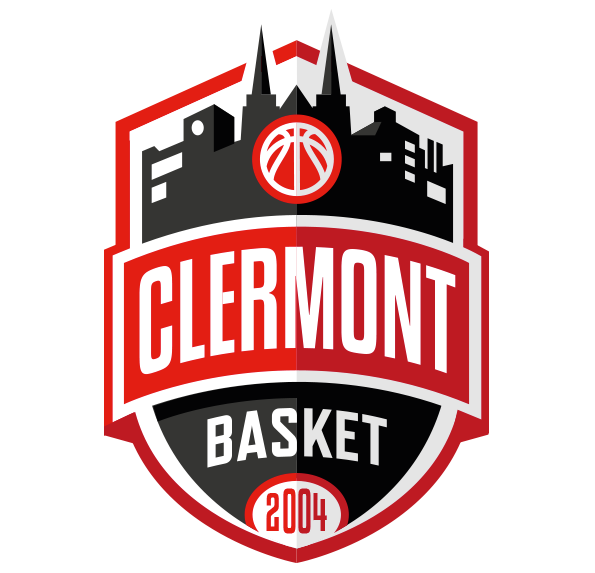

À propos de moi
Je suis étudiant en BUT Informatique à l’IUT de Clermont-Ferrand. Je suis un développeur full-stack capable de travailler dans plusieurs domaines, tels que la programmation en C, C++ et C#, l’administration réseaux, mais surtout la création et l’exploitation de bases de données (SQL), domaine qui m’intéresse particulièrement.
Mon projet professionnel est, à terme, de travailler dans ce domaine ainsi que dans celui de l’intelligence artificielle.

J’apprécie réaliser des projets en équipe et j’adore pratiquer des sports collectifs et passer du temps avec les autres, qu’il s’agisse de mes amis ou de ma famille.

La cohésion et l'esprit d'équipe sont donc des valeurs qui sont importantes pour moi et dans lesquelles je me reconnais.